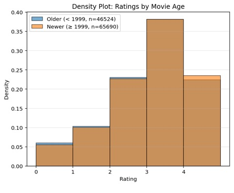
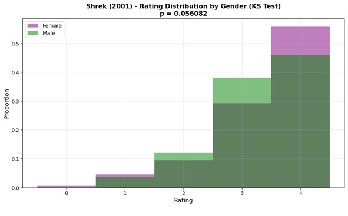
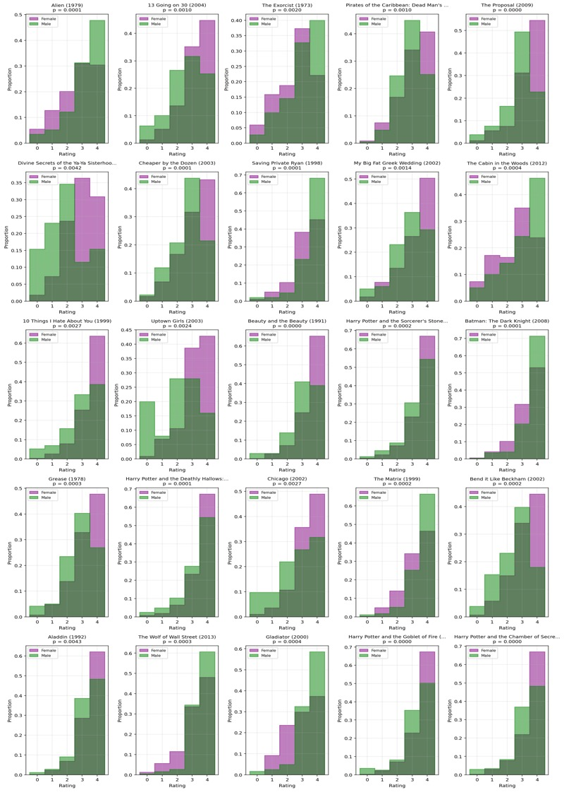
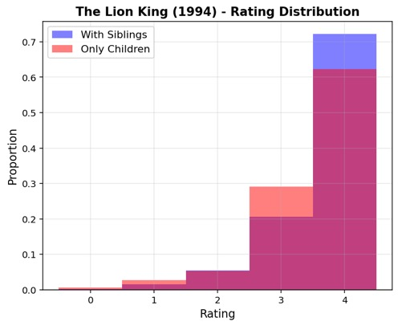
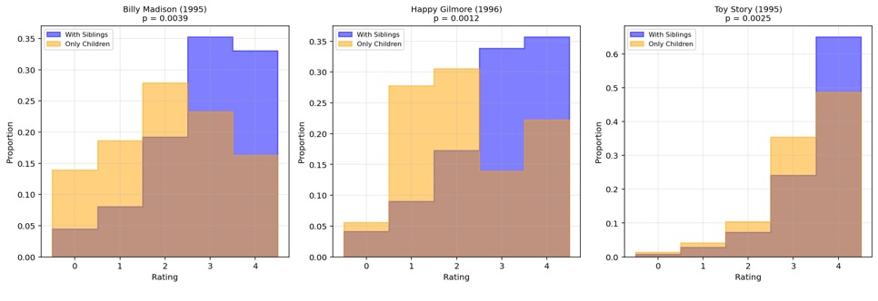
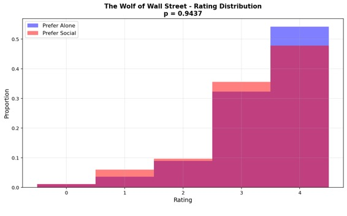
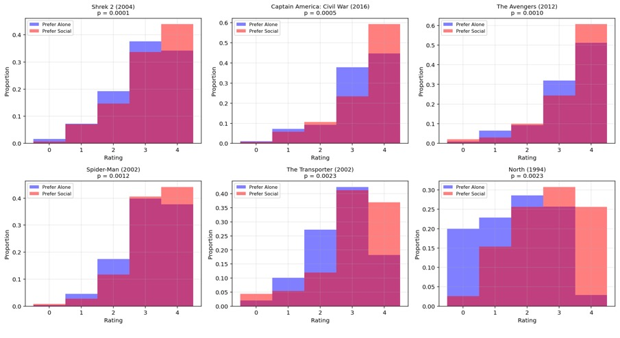
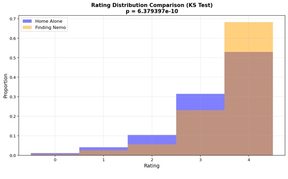
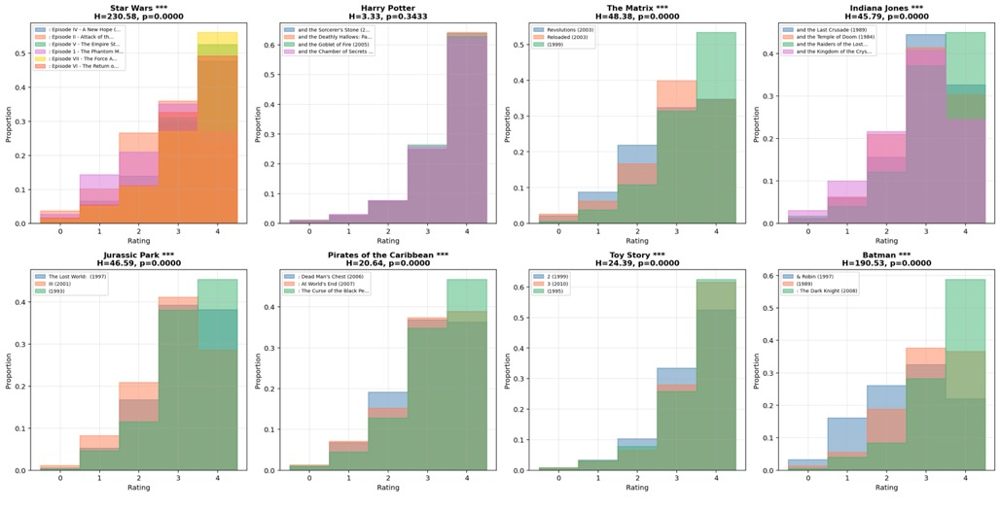
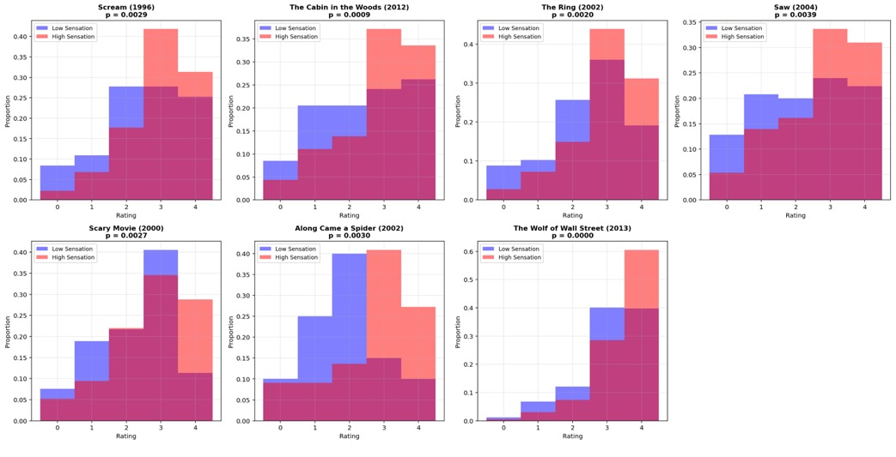

Corina Kaiser
DS-GA 1001: Internship in Data Science
NYU Tandon
Fall 2025
Project 1: Hypothesis Testing of Movie Ratings Data
Contributors
Primary Author: Corina Kaiser
Use of Generative AI: ChatGPT and Claude.ai were used as programming and conceptual aids, including assistance with code structure, debugging, and clarifying statistical concepts.
Context
The following report includes answers determined by analyzing a dataset which includes ratings data of 400 movies from 1097 research participants. Aside from viewers’ movie ratings from 0 to 4, the survey also gathered information regarding self-assessments on sensation seeking behaviors, responses to personality questions, self-reported movie experience ratings, gender identity, whether responders were only children, and whether responders believed that movies are best enjoyed alone. Analysis is based upon a significance level of 𝛼 = 0.005.
Hypothesis Testing Results
Are movies that are more popular rated higher than movies that are less popular?
To determine this, I first I found the median number of non-N/A ratings for each movie, 197.5 ratings, then split the movies into low or high popularity groups based on if their number of ratings was more or less than the median. From these groups, I did a one-tailed U-test comparing all ratings of low popularity movies vs high popularity movies. I chose the U-test since I am comparing ratings data, which cannot be reduced to sample mean, and because I am determining if more popular movies are rated higher than less popular movies. The median rating for high popularity movies is 3.000, while the median rating for low popularity movies is 2.500. Significance testing reported a U-statistic of 1242808144.50, which yields a p-value of 0.0000.
Given that my p value is 0.0000, I conclude that high popularity movies- those with a higher number of ratings- have significantly higher ratings than low popularity movies.

Are movies that are newer rated differently than movies that are older?
First, I extracted the year from each movie and determined the median release year of 1999. Then, I split the movies into older and newer groups. For this test, older movies are defined as those with a release date prior to 1999, while newer movies are defined as those released 1999 and after. I then performed a KS test comparing the distributions of these two groups. This was done because the KS test is best to determine whether there is a difference in distributions of nonparametric data such as ratings. Testing yields a D-statistic of 0.0112, which leads to a p-value of 0.0023.
Given that my p-value is 0.0023, I conclude that newer movies are rated differently than older movies.

Is enjoyment of ‘Shrek (2001)’ gendered, i.e. do male and female viewers rate it differently?
I chose to do a KS-Test comparing male and female viewers’ ratings of ‘Shrek (2001)’. I did this because ratings call for non-parametric tests, and because the KS test specifically will tell me if these groups’ ratings distributions are different from one another. This testing yielded a D-statistic of 0.0980 and a p-value of 0.0561.
Given that my p value is .0561, I conclude that there is no significant difference between male and female ratings of ‘Shrek (2001)’.

What proportion of movies are rated differently by male and female viewers?
To test whether movies’ ratings were the same between male and female viewers, KS tests were applied to each movie after separating reviewers by gender. This type of test was chosen, as it is best to determine if the distributions are different between two groups of non-parametric data sets.
A total of 25 out of 400 movies (6.25%) in this dataset were determined to have a significant difference (p< 0.005) between male and female ratings. The movies which resulted in significant differences, as well as their p-values, can be seen below.

Do people who are only children enjoy ‘The Lion King (1994)’ more than people with siblings?
I chose to do a one tailed U-test to compare the Lion King (1994) ratings between only children and responders with siblings. This test was chosen because a non-parametric test is needed for ratings data and because the U-test will determine if there is significant difference between the medians of the groups. The median rating for ‘Lion King (1994)’ by only children is 3.5 and the median for those with siblings is 4.0. Additionally, the p-value comparing the ratings of these two groups is 0.978, which came from a U-statistic of 5292.0.
Given that those with siblings have a higher median rating of Lion King, plus that the p-value comparing the groups’ ratings is 0.978, I conclude that there is no significant difference between only children and those with siblings’ ratings of Lion King. More specifically, as supported by their medians, this data does not suggest that only children enjoy ‘Lion King (1994)’ more than people with siblings.

What proportion of movies exhibit an “only child effect”, i.e. are rated different by viewers with siblings vs. those without?
I chose to do KS tests comparing the distributions of each movie based on if they answered as only children or if they have siblings. I chose a KS test, as this data cannot be reduced to sample means, plus I was asked whether these groups “rated differently” rather than whether one “rated higher than” the other.
I found that 3 out of 400 movies’ (0.75%) KS-testing yielded p-values below 0.005, suggesting that only children rated them differently. For each of these movies, the median rating was higher from those with siblings as compared to the ratings from only children. This “only child effect” was seen in ‘Happy Gilmore (1996)’, ‘Toy Story (1995)’, and ‘Billy Madison (1995)’. For specific p-values and densities, refer to the figures below.

Do people who like to watch movies socially enjoy ‘The Wolf of Wall Street (2013)’ more than those who prefer to watch them alone?
I chose to do a one-tailed U-test to compare the ‘Wolf of Wall Street (2013)’ ratings between social moviegoers and those who prefer to watch alone. This test was chosen because a non-parametric test is needed for ratings data and because the U-test will determine if there is significant difference between the medians of the groups, and furthermore the one-tailed test will show whether social viewers tend to have a higher rating of this movie. The median rating of ‘Wolf of Wall Street (2013)’ by viewers who answered that, “movies are best enjoyed alone” is 3.5, while the median for those who answered oppositely is 3.0. Additionally, my testing returned a U-statistic of 49303.50, which yields a p-value of 0.9437.
Given that the median for socially inclined movie goers is higher than that of those who prefer to watch alone, plus that the p value comparing the two groups’ ratings is 0.1128, I conclude that there is no significant difference in ratings between viewers of various social inclinations. More specifically, the data does not suggest that those who like to watch movies socially enjoy ‘Wolf of Wall Street (2013)’ more than those who prefer to watch alone.

What proportion of movies exhibit such a “social watching” effect?
To analyze movies’ “social watching” effect, I performed one-tailed U tests on all movies based on whether responders indicated that movies are best watched alone. I chose a one-sided U-test, because this question referred to “such a ‘social watching effect” as in the previous question, where it was asked whether social viewers enjoyed ‘The Wolf of Wall Street (2013)’ more than those who prefer to watch alone. Therefore, I am defining the “social watching effect” as movies which have a significantly higher rating by those who do not think movies are best watched alone (as contrasted with the “only child effect” which measures whether movies are rated differently by those with/without siblings).
Given their p-values below 0.005, I determined that 6 out of 400 movies in this dataset (1.5%) are rated significantly higher by those who prefer to watch movies socially (i.e., responded “no” to the opinion that “movies are best enjoyed alone”). Those movies are: ‘Shrek 2 (2004)’, ‘Captain America: Civil War (2016)’, ‘The Avengers (2012)’, ‘Spider-Man (2002)’, ‘The Transporter (2002)’, and ‘North (1994)’. For the specific p-value yielded by each movie’s U-test, refer to the figures below.

Is the ratings distribution of ‘Home Alone (1990)’ different than that of ‘Finding Nemo (2003)’?
I chose to do a KS-Test comparing the ratings distributions of ‘Home Alone (1990)’ and ‘Finding Nemo (2003)’. I did this because ratings call for non-parametric tests, and because the KS test specifically will tell me if these movies’ ratings distributions are different from one another. The median rating for both movies is 3.5. However, my testing produced a D-statistic of 0.1527, which yields a p-value of 0.0000. Plus, the mean rating of ‘Finding Nemo (2003)’ is 3.388, while the mean rating of ‘Home Alone (1990)’ is 3.130.
Given that my p value is 0.0000, I conclude that there is a significant difference between the ratings distributions of 'Home Alone (1990)’ and ‘Finding Nemo (2003)’. More specifically, the higher mean of ‘Finding Nemo (2003)’ ratings suggests it was generally rated higher.

There are ratings on movies from several franchises in this dataset. How many of these are of inconsistent quality, as experienced by viewers?
After extracting lists of each franchises’ movies, I compared each list using a KW-test. The KW test was chosen because it is best for analyzing groups ³3 with nonparametric data, such as ratings.
Testing showed that all franchises except for ‘Harry Potter’ (H-statistic: 3.331, p-value: 0.343) had inconsistent ratings, i.e. there was at least one movie in each of the other franchises whose ratings differed significantly as shown by KW tests yielding a p-value below .005. Therefore, I conclude that 7 out of 8 of these franchises (‘Star Wars’, ‘The Matrix’, ‘Indiana Jones’, ‘Jurassic Park’, ‘Pirates of the Caribbean’, ‘Toy Story’, ‘Batman’) are of inconsistent quality as reported by viewers.

*** Which movies are rated differently by high sensation seekers vs low sensation seekers?
To answer this question, I found the median of the sum of each respondent’s sensation-seeking questions. Then, I put them into lists based on if they were above or below the median. I did not include those exactly at the median. I chose to exclude those directly at the median, as this would allow me to avoid favoring either extreme. By excluding those at the median, my groups are also more representative of those on the extremes of the sensation-seeking spectrum. I then chose to utilize a KS test for each movie, as this would let me know if these groups’ distributions varied significantly.
In total, 7 out of 400 movies (1.75%) which report a difference in rating distribution based upon sensation seeking behaviors, as decided by their p-values below 0.005. These movies are: ‘The Wolf of Wall Street (2013)’, ‘The Cabin in the Woods (2012)’, ‘The Ring (2002)’, ‘Scary Movie (2000)’, ‘Scream (1996)’, ‘Along Came a Spider (2002)’, and ‘Saw (2004)’. Based upon testing results, I conclude that people with higher sensation seeking behaviors tend to rate these movies differently than those with lower sensation seeking behaviors. Each of these movies had a higher median rating from high sensation seekers, which makes sense given that the majority of these are horror movies and therefore tend to elicit high sensation from viewers. To see specific p-values, refer to the figures below.
